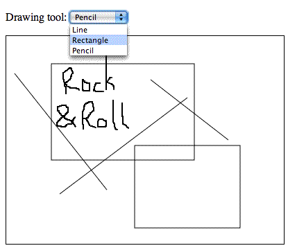
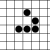

Creating an HTML5 canvas painting application
Table of contents
Introduction
My previous HTML5 canvas tutorial provided you with insight into the numerous use cases for canvas in web applications. In this article we will explore how you can write your own canvas-based painting application.
Making a web application that allows users to draw on a canvas requires
several important steps: setting up your HTML document with a canvas context (a
canvas element with an id), setting up your script
to target that canvas context and draw inside it and adding the required
mouse event handlers for user interaction and associated logic. Once the
event handlers are in place, it's then fairly simple to add any desired
functionality.
The final painting application example looks like this:
To make it easier to follow along with the code walkthrough presented below, you can download the full code example and follow along with it as you read the article.
Getting started with the HTML
We shall begin with a minimal HTML document:
<!DOCTYPE html>
<html lang="en">
<head>
<meta charset="utf-8">
<title>Paint</title>
<style type="text/css"><!--
#container { position: relative; }
#imageView { border: 1px solid #000; }
--></style>
</head>
<body>
<div id="container">
<canvas id="imageView" width="400" height="300">
<p>Unfortunately, your browser is currently unsupported by our web
application. We are sorry for the inconvenience. Please use one of the
supported browsers listed below, or draw the image you want using an
offline tool.</p>
<p>Supported browsers: <a href="http://www.opera.com">Opera</a>, <a
href="http://www.mozilla.com">Firefox</a>, <a
href="http://www.apple.com/safari">Safari</a>, and <a
href="http://www.konqueror.org">Konqueror</a>.</p>
</canvas>
</div>
<script type="text/javascript"
src="example1.js"></script>
</body>
</html>As you can see, we only have the bare bones of an HTML document here,
with a canvas element contained inside. If the browser does not
support Canvas, then the fallback content will show. We will add more markup
later on, but this is all we need for now.
The fallback content you provide should be as helpful as possible. You should not just say something like "this web application is unsupported by your browser" - that would be basically useless. Tell the user what he/she can do to get your application to work (eg use a different web browser), or provide alternative solutions, like a file upload input which allows the user to upload a painting created offline. Even better would be to detect Canvas support and then serve the application as is to browsers that support it, and the upload solution to browsers that don't, automatically. Naturally, the fallback content depends on the context in which the painting application appears.
Canvas interaction
Now we have the canvas element in place, the next step is to
make the element somehow interact with the mouse. We shall first test our
interaction, and then go on to start adding in the functions we want our
application to perform.
Testing the canvas interaction
For testing purposes we shall first try to paint something under the
mouse. We can do that by attaching a mousemove event handler to
the canvas element. Here's the gist of the mousemove example script:
// ...
function init () {
// ...
// Attach the mousemove event handler.
canvas.addEventListener('mousemove', ev_mousemove, false);
}
// The mousemove event handler.
var started = false;
function ev_mousemove (ev) {
var x, y;
// Get the mouse position relative to the canvas element.
if (ev.layerX || ev.layerX == 0) { // Firefox
x = ev.layerX;
y = ev.layerY;
} else if (ev.offsetX || ev.offsetX == 0) { // Opera
x = ev.offsetX;
y = ev.offsetY;
}
// The event handler works like a drawing pencil which tracks the mouse
// movements. We start drawing a path made up of lines.
if (!started) {
context.beginPath();
context.moveTo(x, y);
started = true;
} else {
context.lineTo(x, y);
context.stroke();
}
}
// ...Try the mousemove example live.
This code turned out to be a success: we are just starting to see how
dynamic and cool canvas can be. We use the event.layer*
/ offset* properties to determine the mouse position relative to
the canvas element. That's all we need to start drawing.
Implementing events
Let's take this script one step further. It's best to have a single event
handler that only determines the coordinates relative to the canvas element.
The implementation of each drawing tool should be split into independent
functions. Lastly, drawing tools need to interact with the user for events
like mousedown and mouseup as well, not just when
moving the mouse (mousemove). Therefore, multiple event
listeners will be added to the script.
The updated script including events contains the following snippet:
// ...
function init () {
// ...
// The pencil tool instance.
tool = new tool_pencil();
// Attach the mousedown, mousemove and mouseup event listeners.
canvas.addEventListener('mousedown', ev_canvas, false);
canvas.addEventListener('mousemove', ev_canvas, false);
canvas.addEventListener('mouseup', ev_canvas, false);
}
// This painting tool works like a drawing pencil which tracks the mouse
// movements.
function tool_pencil () {
var tool = this;
this.started = false;
// This is called when you start holding down the mouse button.
// This starts the pencil drawing.
this.mousedown = function (ev) {
context.beginPath();
context.moveTo(ev._x, ev._y);
tool.started = true;
};
// This function is called every time you move the mouse. Obviously, it only
// draws if the tool.started state is set to true (when you are holding down
// the mouse button).
this.mousemove = function (ev) {
if (tool.started) {
context.lineTo(ev._x, ev._y);
context.stroke();
}
};
// This is called when you release the mouse button.
this.mouseup = function (ev) {
if (tool.started) {
tool.mousemove(ev);
tool.started = false;
}
};
}
// The general-purpose event handler. This function just determines the mouse
// position relative to the canvas element.
function ev_canvas (ev) {
if (ev.layerX || ev.layerX == 0) { // Firefox
ev._x = ev.layerX;
ev._y = ev.layerY;
} else if (ev.offsetX || ev.offsetX == 0) { // Opera
ev._x = ev.offsetX;
ev._y = ev.offsetY;
}
// Call the event handler of the tool.
var func = tool[ev.type];
if (func) {
func(ev);
}
}
// ...Try the updated freehand canvas example.
The script has been split into multiple functions. Now the canvas has
three event listeners (mousedown, mousemove and
mouseup). The ev_canvas() function adds two new
properties to the DOM event
object, _x and _y, which simply hold the mouse
coordinates relative to the canvas. This event handler acts like a "proxy"
by calling other functions, depending on the event type. If the event is
mousemove, then tool.mousemove() is called, and so
on. The event handlers associated with the active tool can use the
properties added to the DOM event object.
With the above changes made, we are ready to kick things off. The drawing pencil works fine now, with the added start and end functions. All the pencil-related functions are grouped together in a single function object. Currently we only have the tool_pencil object present, instanced as tool, but we can easily add more objects.
Adding drawing tools
Let's add some more drawing tools, by adding more tool objects. Each new tool needs to implement some of the available events.
First, a drop-down menu will be added, to allow the user to select the different drawing tools. This is achieved by adding the following into the HTML document:
<body>
<p><label>Drawing tool: <select id="dtool">
<option value="rect">Rectangle</option>
<option value="pencil">Pencil</option>
</select></label></p>
<!-- ... -->
</body>Then we update the script to handle more than just one tool:
// ...
// The active tool instance.
var tool = false;
var tool_default = 'rect';
function init () {
// ...
// Get the tool select input.
var tool_select = document.getElementById('dtool');
if (!tool_select) {
alert('Error: failed to get the dtool element!');
return;
}
tool_select.addEventListener('change', ev_tool_change, false);
// Activate the default tool.
if (tools[tool_default]) {
tool = new tools[tool_default]();
tool_select.value = tool_default;
}
// ...
}
// ...
// The event handler for any changes made to the tool selector.
function ev_tool_change (ev) {
if (tools[this.value]) {
tool = new tools[this.value]();
}
}
// This object holds the implementation of each drawing tool.
var tools = {};
// The drawing pencil.
tools.pencil = function () {
// ...
};
// ...That should be enough. The code above just sets up an event handler for
the <select> element. The implementation of each drawing
tool is now inside a single tools object, and the tool
variable just holds an instance of the active tool. The
ev_tool_change() function makes sure that the tool
variable is always an object instance of the tool picked by the user.
The benefit of the above code is that any tool can have its own instance logic, dependent on any factors you see fit. You can do anything you want when the tool is activated, for example ask the user for a string, number or some other input.
Now we've set up a solid groundwork for the tools and looked at the pencil implementation, let's now look at implementing some of the other individual tools.
Rectangle
You are now in for a surprise. Let's implement the rectangle tool and then test the code. Here's the updated script:
// ...
tools.rect = function () {
var tool = this;
this.started = false;
this.mousedown = function (ev) {
tool.started = true;
tool.x0 = ev._x;
tool.y0 = ev._y;
};
this.mousemove = function (ev) {
if (!tool.started) {
return;
}
var x = Math.min(ev._x, tool.x0),
y = Math.min(ev._y, tool.y0),
w = Math.abs(ev._x - tool.x0),
h = Math.abs(ev._y - tool.y0);
context.clearRect(0, 0, canvas.width, canvas.height);
if (!w || !h) {
return;
}
context.strokeRect(x, y, w, h);
};
this.mouseup = function (ev) {
if (tool.started) {
tool.mousemove(ev);
tool.started = false;
}
};
};
// ...The implementation of the new rectangle tool should be straight-forward and thus easy to understand. It maintains the same basic structure as the pencil tool. The difference is that for the rectangle we store the start point, which is needed so we can then draw the rectangle for each mouse move (live feedback).
Now, for the surprise: Access the above example
link and try drawing two rectangles. Notice any problem? Yes, that's
right: the previous drawing is always lost because of the
clearRect() method call. We cannot remove this call, because
the tool becomes useless if we do so (every rectangle resize remains on
screen, before you even release the mouse button to make your
selection).
The solution is to use a temporary canvas for live feedback operations.
The script initialization adds a new canvas element with the
same dimensions as the original one, positioned on top. All tools must draw
on the temporary canvas. When their drawing operation ends, the pixels they
generated are then moved onto the background canvas.
Try the updated rectangle example - the rectangle tool now works fine.
Here are the script changes required. The initialization function now looks like so:
// ...
var canvas, context, canvaso, contexto;
function init () {
// Find the canvas element.
canvaso = document.getElementById('imageView');
if (!canvaso) {
alert('Error: I cannot find the canvas element!');
return;
}
if (!canvaso.getContext) {
alert('Error: no canvas.getContext!');
return;
}
// Get the 2D canvas context.
contexto = canvaso.getContext('2d');
if (!contexto) {
alert('Error: failed to getContext!');
return;
}
// Add the temporary canvas.
var container = canvaso.parentNode;
canvas = document.createElement('canvas');
if (!canvas) {
alert('Error: I cannot create a new canvas element!');
return;
}
canvas.id = 'imageTemp';
canvas.width = canvaso.width;
canvas.height = canvaso.height;
container.appendChild(canvas);
context = canvas.getContext('2d');
// ...
}The new img_update() function is as follows:
// This function draws the #imageTemp canvas on top of #imageView,
// after which #imageTemp is cleared. This function is called each time when the
// user completes a drawing operation.
function img_update () {
contexto.drawImage(canvas, 0, 0);
context.clearRect(0, 0, canvas.width, canvas.height);
}When any drawing operation is complete, the img_update()
function must be invoked, so that the new pixels get stored in the image.
For example, here is the minor update for the pencil tool:
// The drawing pencil.
tools.pencil = function () {
// ...
this.mouseup = function (ev) {
if (tool.started) {
tool.mousemove(ev);
tool.started = false;
img_update();
}
};
};In the case of the rectangle and pencil tools, the drawing operation is
complete once the user releases the mouse button, so we simply add the call
to img_update() into the mouseup event handler.
However, note that this call is dependent on each drawing tool
implementation, in order to ensure the additional flexibility required by
other use cases.
The last part needing a minor update is the HTML document's CSS:
<style type="text/css">
#container { position: relative; }
#imageView { border: 1px solid #000; }
#imageTemp { position: absolute; top: 1px; left: 1px; }
</style>The CSS above rules are needed
to properly position the temporary <canvas> element on
top of the original one.
Line
With everything in place, adding new tools becomes easier and easier. The JavaScript implementation including the line tool looks like this:
tools.line = function () {
var tool = this;
this.started = false;
this.mousedown = function (ev) {
tool.started = true;
tool.x0 = ev._x;
tool.y0 = ev._y;
};
this.mousemove = function (ev) {
if (!tool.started) {
return;
}
context.clearRect(0, 0, canvas.width, canvas.height);
context.beginPath();
context.moveTo(tool.x0, tool.y0);
context.lineTo(ev._x, ev._y);
context.stroke();
context.closePath();
};
this.mouseup = function (ev) {
if (tool.started) {
tool.mousemove(ev);
tool.started = false;
img_update();
}
};
};That's it! Try the line-drawing example for yourself.
The line tool is very similar to the rectangle tool. The
mousedown() function stores the starting point, which is then
used in mousemove() for drawing the actual line.
What's next?
The above should give you a fairly good understanding of what it takes to start developing an online paint application. Besides just drawing on the canvas you need to take into consideration other aspects as well, such as:
- The current structure of the drawing tool objects is roughly events-based. You will need events for pre-activation, post-activation and deactivation for some of your tools. For example, an "Insert image" tool might ask the user for the URL, but if the user decides to cancel, your script must somehow cancel the activation of said tool.
- You will certainly need more event listeners, not just the three listed in the previous point (think of context menus, double clicks and more). Adding any new event to the list is a trivial task.
- You need a way to store history steps for undoing / redoing operations. There are three approaches for this: store the entire image in memory for each step, remember each operation executed (like a macro), or a hybrid between the two methods. Each method has its own pros and cons. The first method is faster and easier to implement, but uses too much memory, and with big images it is slow to store the image in the history. The second method is more complex, but faster when considering just storing the macro commands for each step; there is still a slowness associated with actually executing undo / redo however - you have to re-execute the commands in history. The hybrid method is the most complex approach, but depending on your implementation it should be the fastest.
- Keyboard shortcuts for most drawing operations are needed. This means that the drawing tool objects need more event handlers. I will deal with the keyboard accessibility of this application in a future article - watch this space.
- Each tool should have its own set of properties and options (colors, line thickness, and more).
- You might want to consider combining SVG with canvas, for more possibilities.
- What makes or breaks an application is its user interface: commands, tools, keyboard shortcuts, and the general use-cases best handled by the application. You have to make your application pleasant for daily usage as well as cool.
If you want to learn more, you can take a look at the open-source project Paint.Web. This tutorial is based on the code used for Paint.Web, thus you should already have a head-start in understanding that code. At the moment, Paint.Web is in a permanent state of evolution, and it has already tackled some of the aspects mentioned above.
Read more...
This article is licensed under a Creative Commons Attribution, Non Commercial - Share Alike 2.5 license.
Comments
The forum archive of this article is still available on My Opera.
-

I'm a little bit confuse on this script
-

@vanez88 We are making a new empty object called tools, then creating a method called asd that records a start property of two. We are then creating a new instance of the tools object called tool, and alerting the value of the inherited start property.
-

Hello I would like to change tools putting a image of a tool like pencil ect into the canvas. How can I do?
-

@Chris Mills
 or something like that.
or something like that.
-

something like this?:
No new comments accepted.vanez88
Monday, March 5, 2012
var tools ={};
tools.asd = function()
{
this.start=2;
}
var tool = new tools['asd']();
alert(tool.start);
Can you tell what method is this ?
Chris Mills
Monday, March 5, 2012
Hope this helps. I am probably misunderstanding the question ;-)
netsam
Tuesday, November 5, 2013
centauro41
Friday, November 8, 2013
I would like to put a tool icon like a small "arrow-icon" for the arrow tool or a small "rectangle-icon" for the rectangle tool to send my request to the javascript instead of the <select id="dtool"></select> tag.
Maybe like
How can i do this?
Thanks in advance!
Ben Miller
Wednesday, November 27, 2013
<.button onclick="picktool(this.title)" title="rect"><.img src="rect.png" width="20px" height="20px"></.button>
<.script>
function picktool(toolname)
{
//getthetool
//...
}
</script>